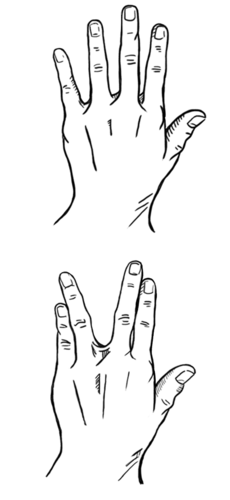

<div class="container lifeandliving"><div id="contents" class="col-md-12 main-content"><span class="ch-nr-4"/>
        <div class="section"><h1 class="title" id="toc-id-0">Variasie</h1><div class="teachers-guide">
<p><strong>Hoofstuk-oorsig</strong></p>

<p>1 week</p>

<p>In die laaste hoofstuk van hierdie termyn gaan ons kyk na variasie in 'n spesie en wat dit beteken. Leerders het alreeds geleer hoe om organismes te klassifiseer tot en met die spesies-vlak, deur gedeelde eienskappe te gebruik. Maar dit is belangrik vir leerders om te verstaan dat individue selfs binne 'n spesie verskil. Hierdie verskille word variasie genoem. Omdat ons nog nie van selle en DNA geleer het nie, sal hierdie hoofstuk nie kyk na die genetiese basis vir variasie nie, maar eerder fokus op die feit dat daar verskille tussen individue in dieselfde spesie is, en dat party van daardie eienskappe oorge&#235;rf word (oorgedra word van een generasie na die volgende). Ons sal ook die konsep van natuurlike seleksie, waarin 'n spesifieke variasie 'n organisme beter geskik vir (aangepas by) 'n spesifieke omgewing maak, bekendstel. Dit is noodsaaklik vir die oorlewing van die spesie, veral omdat omgewings kan verander. Leerders sal voorgestel word aan DNA in Gr. 9, en slegs as 
hulle aangaan met Lewenswetenskappe in Gr. 10-12 sal hulle in detail kyk na DNA, meiose, variasie, natuurlike seleksie en evolusie van die mens in Gr. 12.</p>

<p/>

<p>4.1 Variasie in 'n spesie (1.5 ure)</p>
<table><tr><td><p><strong>Take</strong></p></td><td><p><strong>Vaardighede</strong></p></td><td><p/></td></tr><tr><td><p>Aktiwiteit: Klein, groot, lang hare, kort hare, swart, wit, bruin of kollerig?!</p></td><td><p>Onthou, identifiseer, beskryf, verduidelik,</p></td><td><p>Opsioneel (Voorgestel)</p></td></tr><tr><td><p>Aktiwiteit: Die lengte van leerders in jou klas</p></td><td><p>Meet, teken aan, stip grafieke, vergelyk, bereken, bespreek</p></td><td><p>KABV voorgestel</p></td></tr></table><p/>

<p>4.2 Erflikheid by mense (1.5 ure)</p>
<table><tr><td><p><strong>Take</strong></p></td><td><p><strong>Vaardighede</strong></p></td><td><p/></td></tr><tr><td><p>Aktiwiteit: Wat is jou erflikheid?</p></td><td><p>Dink, neem waar, teken aan, bereken, vergelyk, teken, benoem</p></td><td><p>KABV voorgestel</p></td></tr><tr><td><p>Aktiwiteit: Natuurlike seleksie by die pepermot</p></td><td><p>Lees, verduidelik</p></td><td><p>Opsioneel (Uitbreiding)</p></td></tr></table><p/>
</div>
<p/>
<div class="note col-md-10" data-type="keyquestions"><ul data-class="ListBulleted"><li>Is alle honde deel van dieselfde spesie as daar so baie verskillende groottes, vorms en kleure is?</li>
<li>Wat van mense? Wat beteken dit dat ons verskillende velkleure, lengtes en ander verskille het as ons almal deel is van <em>Homo sapiens</em>?</li>
<li>Wat beteken variasie?</li>
<li>Wat veroorsaak variasie?</li>
<li>Hoekom is dit belangrik dat ons variasie bestudeer?</li>
</ul></div><div class="section"><h2 class="title" id="toc-id-1">Variasie in 'n spesie</h2><div class="note col-md-6" data-type="newwords"><ul data-class="ListBulleted"><li>Erflikheid</li>
<li>natuurlike seleksie</li>
<li>variasie</li>
</ul></div>
<p/>

<p>In die vorige hoofstukke het ons geleer hoe om organismes op Aarde te klassifiseer. Onthou jy wat is die klassifikasievlakke? Wat is die kleinste groep in die klassifikasiestelsel?</p>
<div class="teachers-guide">
<p>Die klassifikasiestelsel is: Koninkryke, dan phylums (filums), dan klasse, dan ordes, dan families, dan genera en die kleinste groep is spesies.</p>
</div>
<p/>

<p>'n Spesie is 'n groep organismes wat onderling kan teel om 'n vrugbare nageslag voort te bring. In hierdie afdeling sal jy leer hoekom die vermo&#235; om 'n vrugbare nageslag te produseer die enkele mees kenmerkende eienskap van 'n spesie is.</p>

<p/>

<p>Waar organismes van 'n spesie ookal leef, hulle moet onder daardie toestande kan oorleef. Ons s&#234; dat hulle aangepas is by hulle omgewing. Die individue van 'n spesie wat eienskappe het wat hulle meer suksesvol maak vir oorlewing sal meer voortplant en hulle eienskappe aan hulle nageslag oordra. Maar omgewings verander oor tyd. Dit beteken dat die spesie konstant sal moet verander om die toestande van hulle veranderende habitat te kan oorleef. As die organismes nie aanpas by hulle omgewing nie, mag hulle dalk nie oorleef nie, en die spesie sal uitsterf. Maar hoe pas spesies aan? Gebeur dit vinnig of oor 'n lang tyd?</p>

<p/>

<p>Wat beteken variasie wanneer ons die term in Natuurwetenskappe gebruik? Kom ons kyk na 'n paar diere waarmee ons almal bekend is om uit te vind wat variasie beteken.</p>

<p/>
<div class="activity" data-type="Activity"><h1 class="title">Klein, groot, lang hare, kort hare, swart, wit, bruin of kollerig?!</h1>
<p/>

<p>Het jy 'n hond, of het jy al 'n paar honde in jou buurt gesien? Dink aan daardie honde en gebruik die volgende beeld om die vrae te antwoord.</p>

<p/>
<figure id="gd-idp274336"></figure><p/>

<p><strong>VRAE:</strong></p>
<div class="exercises"><div class="problemset"><div class="entry"><div class="problem">
<p>Aan watter koninkryk behoort honde? </p><hr/></div><div class="solution">
<p/><p>Die diereryk.</p>
</div></div><div class="entry"><div class="problem">
<p>Aan watter filum behoort honde? Waarom s&#234; jy so? Gee 'n rede vir jou antwoord. </p><hr/><hr/></div><div class="solution">
<p/><p>Honde is van die filum Chordata omdat hulle Vertebrata is, wat 'n ruggraat en interne benige skelet het.</p>
</div></div><div class="entry"><div class="problem">
<p>Aan watter klas behoort honde? Gee drie redes waarom jy honde in hierdie klas sal klassifiseer. </p><hr/><hr/><hr/></div><div class="solution">
<p/><p>Honde is soogdiere omdat hulle endotermies (warmbloedig) is, hulle het 'n pels, hulle het melkkliere, hulle gee geboorte aan lewendige kleintjies.</p>
</div></div><div class="entry"><div class="problem">
<p>Kyk na die honde in die prent hierbo en skryf 'n paar gemeenskaplike kenmerke van die diere neer. </p><hr/><hr/><hr/></div><div class="solution">
<p/><p>'n Paar gemeenskaplike kenmerke sluit in: vier bene, pels, stert, skerp tande, snoet (verlengde neus), gepunte ore, pote met kloue.</p>
</div></div><div class="entry"><div class="problem">
<p>Dink jy hierdie honde is deel van dieselfde spesie? Hoe sal jy weet? Bespreek dit met die klas en die onderwyser. </p><hr/></div><div class="solution">
<p/><p>Ja, hulle is. Al die verskillende soorte huishoudelike honde kan met mekaar voortplant om 'n nageslag voort te bring. Die vermo&#235; om voort te plant en vrugbare nageslag te h&#234; is die definisie van 'n spesie.</p>
</div></div><div class="entry"><div class="problem">
<p>Al deel hierdie honde baie eienskappe, is daar baie verskille tussen hulle. Wat is 'n paar van hierdie verskille? </p><hr/><hr/></div><div class="solution">
<p/><p>'n Paar verskille sluit in pelskleur, pelslengte, liggaamsvorm, liggaamsgrootte, lengte van bene, lengte van sterte, lengte van snoet, oor vorms, ens.</p>
</div></div><div class="entry"><div class="problem">
<p>Nog 'n voorbeeld van variasie is perde. Perde behoort aan dieselfde spesie omdat hulle met mekaar kan teel en 'n nageslag voortbring wat vrugbaar is. Dit beteken hulle nageslag kan voortplant. Maar daar is baie verskillende kleure en groottes perde.</p>

        <figure><figcaption class="caption">'n Wit perd met 'n bruin vulletjie. <a href="http://www.flickr.com/photos/mikemcsharry/5061749757/"> http://www.flickr.com/photos/mikemcsharry/5061749757/ </a></figcaption></figure><p>Perde en ponies is van dieselfde spesie. Maar wat van donkies?</p>

        <figure><figcaption class="caption">'n Donkie<a href="http://www.flickr.com/photos/mdpettitt/2680351435/"> http://www.flickr.com/photos/mdpettitt/2680351435/ </a></figcaption></figure><p>As 'n perd met 'n donkie teel kan hulle 'n nageslag voortbring, maar die nageslag is onvrugbaar. Hulle word muile of muilesels genoem. Dink jy donkies en perde is dieselfde spesie? Gee 'n rede vir jou antwoord. </p><hr/><hr/></div><div class="solution">
<p/><p>Perde en donkies is nie dieselfde spesie nie omdat hulle nie 'n vrugbare nageslag kan produseer wat kan voortplant nie.</p>
</div></div></div></div>
<div class="teachers-guide">
<p>Beide behoort aan die familie Equidae en die genus <em>Equus</em>, maar hulle is van verskillende spesies. Die mak perd is van die spesie <em>Equus caballus</em> en die mak donkie is van die spesie <em>Equus asinus</em>. 
Hierdie vraag was ingesluit om die konsep te versterk dat 'n spesie organismes is wat kan voortplant om vrugbare nageslag te produseer.</p>
</div>
<p/>
</div>

<p/>

<p>Alle lewende organismes wat geslagtelik voortplant produseer nakomelinge wat verskil van die ouer-organismes. Onthou dat ons geleer het van geslagtelike voortplanting by angiosperme en by mense in die vorige hoofstuk. Dit maak dit moontlik vir nuwe organismes om verskillend te wees van ander organismes in dieselfde spesie. Ons noem hierdie verskil <strong>variasie</strong>. Soos ons in die laaste aktiwiteit gesien het, is alle honde op Aarde,  eintlik dieselfde spesie, en so ook alle perde, maar daar is groot verskille tussen al die individue. Ons s&#234; dat daar variasie is.</p>

<p/>

<p>Selfs diere van dieselfde werpsel of kinders van dieselfde ouers het verskille. Kyk na die katjies in die blokkie hieronder. Hulle is almal van dieselfde werpsel, hulle deel dieselfde ouers, maar hulle lyk almal verskillend.</p>

<p/>
<figure><figcaption class="caption">Drie katjies van dieselfde werpsel maar hulle lyk almal verskillend!</figcaption></figure><p/>

<p>Mense is almal een spesie. Onthou jy wat die spesies-naam is vir mense? </p><hr/><div class="teachers-guide">
<p><em>Homo sapiens.</em></p>
</div>
<p/>

<p>Alle mense op Aarde is van dieselfde spesie en tog is daar groot variasie onder ons. Kyk na die volgende foto's van mense van regoor die w&#234;reld.</p>
<figure><figcaption class="caption">'n Tibetaanse meisie.<a href="http://www.flickr.com/photos/star_trooper/849678040/"> http://www.flickr.com/photos/star_trooper/849678040/ </a></figcaption></figure><figure><figcaption class="caption">'n Sweedse man. <a href="http://www.flickr.com/photos/shankbone/6224544138/"> http://www.flickr.com/photos/shankbone/6224544138/ </a></figcaption></figure><figure><figcaption class="caption">'n Skooldogter in die Kongo. <a href="http://www.flickr.com/photos/hdptcar/2530173319/"> http://www.flickr.com/photos/hdptcar/2530173319/ </a></figcaption></figure><figure><figcaption class="caption">'n Indiese dame. <a href="http://www.flickr.com/photos/vinothchandar/5645156569/"> http://www.flickr.com/photos/vinothchandar/5645156569/ </a></figcaption></figure><figure><figcaption class="caption">'n Kambodjaanse seun. <a href="http://www.flickr.com/photos/strupler/7800131730/"> http://www.flickr.com/photos/strupler/7800131730/ </a></figcaption></figure><figure><figcaption class="caption">'n Nederlandse meisie. <a href="http://www.flickr.com/photos/charlottemorrall/3868699640/"> http://www.flickr.com/photos/charlottemorrall/3868699640/ </a></figcaption></figure><figure><figcaption class="caption">'n Masai vegter in Kenia. <a href="http://www.flickr.com/photos/waltercallens/3736366270/"> http://www.flickr.com/photos/waltercallens/3736366270/ </a></figcaption></figure><figure><figcaption class="caption">'n Chinese soldaat.<a href="http://www.flickr.com/photos/fungo/82574635/"> http://www.flickr.com/photos/fungo/82574635/ </a></figcaption></figure><figure><figcaption class="caption">'n Engelse seun. <a href="http://www.flickr.com/photos/jsorbie/5870148690/"> http://www.flickr.com/photos/jsorbie/5870148690/ </a></figcaption></figure><figure><figcaption class="caption">'n Irannese vrou. <a href="http://www.flickr.com/photos/peter_curb/5462113048/"> http://www.flickr.com/photos/peter_curb/5462113048/ </a></figcaption></figure><figure><figcaption class="caption">'n Ethiopiese man.<a href="http://www.flickr.com/photos/babasteve/3103127147/"> http://www.flickr.com/photos/babasteve/3103127147/ </a></figcaption></figure><figure><figcaption class="caption">'n Peruaanse vrou. <a href="http://www.flickr.com/photos/ifrigginan/3261348/"> http://www.flickr.com/photos/ifrigginan/3261348/ </a></figcaption></figure><p/>

<p>Suid Afrika is 'n ongelooflike voorbeeld van diversiteit onder mense. Kyk net na jou klas en hoeveel variasie daar tussen julle almal in een klas is. Party leerders is lank en ander kan korter wees, party het donker hare, party het blonde of bruin hare, en daar is 'n reeks velkleure in Suid Afrika. Omdat julle almal van dieselfde spesie is, is hierdie nog 'n voorbeeld van variasie. Kom ons kyk hoe jou klasmaats in lengte verskil.</p>

<p/>
<div class="activity" data-type="Activity"><h1 class="title">Die lengtes van leerders in jou klas</h1><div class="teachers-guide">
<p>As 'n huiswerk taak, uiteengesit in vraag 4 hieronder, moet leerders die lengte van 'n paar  volwassenes in hulle families meet. Vra eers vir die leerders of dit moontlik is. U kan &#243;f leerders kry om dit 'n dag vroe&#235;r te doen as die aktiwiteit, en om die inligting saam met hulle klas toe te bring sodat u die aktiwiteit en bespreking in een les kan afhandel, &#243;f u kan die aktiwiteit voltooi en daarna die huiswerktaak gee.</p>

<p/>

<p>As die meet van volwassenes in families dalk ongemaklik vir party leerders is (kultureel, geen volwassenes by die huis nie of ander probleme) kan u re&#235;l om die lengtes van die Graad 6 en Graad 9 leerders as 'n ondersoek te meet.</p>
</div>
<p/>

<p><strong>MATERIALE:</strong></p>
<ul data-class="ListBulleted"><li>2 m maatband</li>
<li>potlood, tabel geteken op afvalpapier en 'n knyperbord om op te werk    </li>
</ul><p/>

<p><strong>INSTRUKSIES:</strong></p>
<ol data-class="ListEnumerated"><li>Heg 'n maatband of soortgelyke apparaat aan 'n muur in die klas vas. </li>
<li>Leerders wie se lengte gemeet word, moet kaalvoet wees en moet met hulle hakke teen die muur en regop teen die muur staan. </li>
<li>Leerders wat die afmetings neem moet op 'n stoel staan en 'n liniaal of potlood horisontaal op die persoon se kop plaas (en die hare plat maak) wanneer die afmeting geneem word. </li>
<li>'n Ander leerder moet die naam en lengte van elke leerder aanteken. </li>
</ol><div class="teachers-guide">
<p>Hierdie aktiwiteit kan gebruik word om die konsep van betroubaarheid in wetenskaplike ondersoeke te verduidelik. Verduidelik aan u  leerders dat foute partykeer insluip in  wetenskaplike metings en dat die verkeerde resultate dan aangeteken word. Ons kan dit regstel deur dieselfde eksperiment 'n paar keer te herhaal en as ons dieselfde (of baie soortgelyke) resultate kry, dan weet ons dat die resultate betroubaar is. Om dit te illustreer kan u 'n paar meet-stasies opstel waar leerders beurte kry om gemeet te word en die afmeting te neem. Elke leerder kan 3 keer gemeet word en dan word 'n gemiddeld bereken.</p>
</div><ol data-class="ListEnumerated"><li>Gebruik hierdie metode om die lengte van elke leerder in die klas aan te teken. </li>
<li>Teken 'n tabel om die afmetings aan te teken. </li>
<li>Stel hierdie resultate op 'n staafgrafiek voor in die spasie wat voorsien is. </li>
</ol><p/>

<p>Gebruik die volgende spasie om die lengtes van leerders in jou klas in 'n tabel aan te teken.</p>
<div class="teachers-guide">
<p>Indien u 'n groot klas het kan u die leerders in groepe van 10 opdeel en hulle kan net die lengtes van hulle groep aanteken en dit gebruik om 'n grafiek te teken.</p>
</div>
<p><br/><br/><br/><br/><br/><br/><br/><br/><br/><br/></p>

<p>Gebruik nou hierdie inligting en teken 'n grafiek om die inligting voor te stel. Jy sal 'n staafgrafiek moet teken. Dink aan wat op die horisontale x-as moet verskyn en wat op die vertikale y-as moet verskyn. Onthou, die x-as is vir die onafhanklike veranderlikes en die y-as is vir die afhanklike veranderlike. Gee jou grafiek 'n opskrif.</p>
<div class="teachers-guide">
<p>Lei leerders deur hierdie aktiwiteit om 'n staafgrafiek te teken. Die leerders se name is die onafhanklike veranderlikes in hierdie aktiwiteit en dus moet hulle name op die x-as verskyn. Die lengtes is afhanklik van die leerder, dus moet die lengtes op die y-as verskyn.</p>
</div><div class="exercises"><div class="problemset"><div class="entry"><div class="problem">
<p><br/><br/><br/><br/><br/><br/><br/><br/><br/><br/><br/><br/></p>
</div><div class="solution">
<p/><p>Leerder-afhanklike antwoord</p>
</div></div></div></div>
<div class="teachers-guide">
<p>As 'n uitbreiding kan u 'n histogram-grafiek laat teken om die verskil tussen hierdie twee soorte grafieke te illustreer. Om 'n histogram te doen, moet u reekse lengtes skep en dan tel hoeveel leerders in elke reeks val. Die lengte-reekse verskyn op die x-as en die aantal leerders wat in elke kategorie val, verskyn op die y-as. Deur van die grafiek gebruik te maak kan 'n mens maklik sien wat die mees algemene lengtereeks in die klas is.</p>
</div>
<p/>

<p><strong>VRAE:</strong></p>
<div class="note col-md-6" data-type="takenote">
<p>Onthou jy hoe om 'n gemiddeld te bereken? Jy moet al die individuele afmetings optel, en dan dit deel deur die aantal leerders wat jy gemeet het.</p>
</div><div class="exercises"><div class="problemset"><div class="entry"><div class="problem">
<p>Wie is die langste en wie is die kortste in jou klas? </p><hr/></div><div class="solution">
<p/><p>Klas-afhanklike antwoord.</p>
</div></div><div class="entry"><div class="problem">
<p>Wat is die gemiddelde lengte van al die leerders in jou klas? Gebruik die volgende spasie om jou berekening te toon. <br/><br/><br/><br/><br/></p>
</div><div class="solution">
<p/><p>Leerder-afhanklike antwoord.</p>
</div></div><div class="entry"><div class="problem">
<p>Wat is die gemiddelde lengte van die seuns en wat is die gemiddelde lengte van die meisies? Gebruik die spasie om jou berekeninge te toon. <br/><br/><br/><br/><br/><br/><br/><br/></p>
</div><div class="solution">
<p/><p>Leerder-afhanklike antwoord.</p>
</div></div><div class="entry"><div class="problem">
<p>Meet die lengtes van 'n paar van die volwasse lede van jou familie vir 'n huiswerk-aktiwiteit. Teken hierdie lengtes aan in die volgende spasie om die volgende dag met jou klas te bespreek. <br/><br/><br/><br/><br/><br/></p>
</div><div class="solution">
<p/><p>Leerder-afhanklike antwoord.</p>
</div></div></div></div>
<ol data-class="ListEnumerated"><li>Bespreek hierdie resultate met jou klas.<ol data-class="ListEnumerated"><li>Het die korter mense in die klas ook korter familielede en het die langer mense in die klas ook langer familielede?</li>
<li>Is daar 'n korrelasie (verhouding) tussen die lengtes van leerders in jou klas en die volwassenes in hulle familie?</li>
<li>Watter ander ooreenkomste is daar tussen familielede?</li>
<li>Skryf 'n paar notas oor die klasbespreking hieronder neer. <hr/><hr/><hr/><hr/><hr/><hr/></li>
</ol></li>
</ol><div class="note col-md-6" data-type="takenote">
<p>'n Korrelasie is 'n verhouding tussen twee of meer stelle afmetings of voorwerpe (items of dinge).</p>
</div><div class="teachers-guide">
<p>Hierdie bespreking word bedoel as 'n beginpunt vir die volgende afdeling oor erflikheid. Ons sal nog een kort aktiwiteit doen oor soortgelyke  eienskappe tussen familielede, voordat ons in meer detail na erflikheid kyk. Gebruik hierdie bespreking as 'n geleentheid om die konsep van korrelasie bekend te stel. Kyk of daar 'n paar voorbeelde van korrelasie tussen die langste leerder in die klas en die lengtes van sy of haar familielede en die kortste leerder in die klas en sy of haar familielede gevind kan word om te illustreer dat lengte 'n eienskap is wat dikwels in families oorgedra word.</p>
</div>
<p/>
</div>

<p/>

<p>Ons het nou gesien dat daar groot variasie tussen al die mense op Aarde is, en selfs in jou klas. Maar daar is ook baie ooreenkomste, veral tussen familielede, soos lengte en velkleur. Hierdie eienskappe (trekke) word oorgedra van een generasie aan die volgende in 'n familie. Ons s&#234; hulle is oorge&#235;rfde eienskappe. Kom ons kyk bietjie meer hierna.</p></div><div class="section"><h2 class="title" id="toc-id-2">Erflikheid by mense</h2>
<p>Ons s&#234; dat sekere eienskappe oorgedra word van generasie na generasie oor baie jare, van ouer-organismes na hulle nageslag. Dit word <strong>erflikheid</strong> genoem.</p>

<p/>
<div class="note col-md-6" data-type="takenote">
<p>Ons kan die woord <strong>Erflikheid</strong> op verskillende maniere gebruik. Wanneer iemand sterf kan hulle 'n erfenis van geld, 'n huis, voertuig of ander fisiese besittings vir hulle kinders of ander mense nalaat. In Wetenskap beteken erflikheid hoe ouers se eienskappe of trekke aan hulle kinders oorgedra word.</p>
</div>
<p/>

<p>By party eienskappe is dit baie maklik om te sien hoe hulle oorge&#235;rf is, soos velkleur of lengte. Weet jy dat party mense met een oog kan oogknip maar nie met die ander een nie? Of dat ander slegs sommige kleure kan sien maar nie al die kleure nie - dit word kleurblindheid genoem. Kom ons vind 'n bietjie meer uit oor sommige van hierdie oorge&#235;rfde eienskappe.</p>

<p/>
<div class="activity" data-type="Activity"><h1 class="title">Wat het jy oorge&#235;rf?</h1>
<p/>
<div class="exercises"><div class="problemset"><div class="entry"><div class="problem">Dink aan jou mees onlangse familie-byeenkoms of familie-foto. Is daar iets wat julle almal in gemeen het? Dit kan iets wees in verband met jou fisiese voorkoms, of jou gedrag of iets wat jy kan doen. Bespreek enige oorge&#235;rfde eienskappe wat van generasie tot generasie oorgedra word in jou familie. </div><div class="solution">
<p/><p>Leerder-afhanklike antwoord.</p>
</div></div><div class="entry"><div class="problem">
<p>Een van die baie interessante oorge&#235;rfde eienskappe is die vermo&#235; om jou tong te kan rol.</p>

                <figure><figcaption class="caption">Kan jy jou tong rol?</figcaption></figure><p>Kan jy jou tong rol? Kan jou familielede hulle tonge rol? </p><hr/></div><div class="solution">
<p/><p>Leerder-afhanklike antwoord.</p>
</div></div></div></div>
<ol data-class="ListEnumerated"><li>Daar is baie ander eienskappe en vermo&#235;ns wat oorge&#235;rf word vanaf ons ouers, wat hulle ge&#235;rf het van hulle ouers, wat hulle weer by hulle ouers ge&#235;rf het, ensovoorts. Hieronder is 'n tabel wat sommige van hierdie eienskappe uiteensit. </li>
<li>Tel hoeveel mense in jou klas kan elkeen van hierdie eienskappe doen, of wie elkeen van hierdie eienskappe het. </li>
<li>Teken die aantal leerders in jou klas aan wat elke eienskap het. </li>
<li>Bereken die persentasie leerders wat hierdie eienskap het. </li>
</ol><div class="teachers-guide">
<p>U sal dalk die leerders moet help om die persentasie uit te werk. Om die persentasie uit te werk moet 'n  mens:</p>
<ul data-class="ListBulleted"><li>Tel aantal leerders wat 'n spesifieke eienskap het.</li>
<li>Deel daardie getal deur die <em>totaal</em> aantal leerders wat betrokke is</li>
<li>Vermenigvuldig daardie getal met 100.</li>
<li>Teken 'n staafgrafiek om die persentasies te toon van leerders wat elkeen van die eienskappe het. </li>
</ul></div>
<p/>
<table class="too-large"><tr><td><p><strong>Eienskap</strong></p></td><td><p><strong>Illustrasie </strong></p></td><td><p><strong>Aantal leerders met die eienskap</strong></p></td><td><p><strong>Persentasie leerders met die eienskap</strong></p></td></tr><tr><td><p>Tong rol</p>

                  
<p/></td><td><figure id="gd-idp806288"></figure></td><td><p/></td><td><p/></td></tr><tr><td><p>Duim-vorm</p></td><td><figure id="gd-idp565360"></figure></td><td><p>Ryloper-duim:</p>

                  
<p/>

                  
<p/>

                  
<p/>

                  
<p/>

                  
<p/>

                  
<p>Reguit duim:</p></td><td><p/></td></tr><tr><td><p>Dominante hand</p>

                  
<p/></td><td><figure id="gd-idp571248"></figure></td><td><p>Regshandig</p>

                  
<p/>

                  
<p/>

                  
<p/>

                  
<p/>

                  
<p>Linkshandig</p>

                  
<p/>

                  
<p/></td><td><p/></td></tr><tr><td><p>Vashegting van oorlob</p>

                  
<p/></td><td><figure id="gd-idp10816352"></figure></td><td><p>Vasgehegte oorlob:</p>

                  
<p/>

                  
<p/>

                  
<p/>

                  
<p/>

                  
<p>Los oorlob:</p>

                  
<p/></td><td><p/></td></tr><tr><td><p>Kuiltjies</p></td><td><figure id="gd-idp134864"></figure></td><td><p/></td><td><p/></td></tr><tr><td><p>Lengte van tweede toon</p></td><td><figure id="gd-idp138624"></figure></td><td><p>Langer tweede toon:</p>

                  
<p/>

                  
<p/>

                  
<p/></td><td><p/></td></tr><tr><td><p>Vulkan teken</p></td><td><figure id="gd-idm114720"></figure></td><td><p/></td><td><p/></td></tr></table><p/>

<p>Wanneer jy al die data versamel het en die persentasie leerders wat 'n sekere eienskap het uitgewerk het, teken 'n staafgrafiek in die spasie wat voorsien is. Onthou om jou grafiek byskrifte en 'n opskrif te gee. <br/><br/><br/><br/><br/><br/><br/><br/><br/><br/><br/><br/></p>
<div class="teachers-guide">
<p>'n Moontlike huiswerk-aktiwiteit: Gebruik die eienskappe hierbo en kyk wat familielede by die huis kan doen en of hulle dieselfde eienskappe deel of nie. Bereken die persentasie van familielede wat hulle tonge kan rol of nie.</p>
</div>
<p/>
</div>

<p/>

<p>Hoe help variasie in 'n spesie dat die spesie kan oorleef?</p>
<div class="section"><h3 class="title" id="toc-id-3">Natuurlike seleksie</h3><div class="teachers-guide">
<p>Hierdie afdeling is ekstra inligting en nie noodsaaklik om met die leerders te doen as tyd dit nie toelaat nie. Maar dit skakel goed met wat leerders in latere grade sal doen indien hulle met Lewenswetenskappe aangaan.</p>
</div>
<p/>

<p>Het jy al ooit die gesegde 'oorlewing van die geskikste of sterkste' gehoor? Dit verwys na die manier waarop organismes in hulle omgewings kan oorleef omdat hulle die beste aangepas is of dat hulle sekere eienskappe het wat hulle toelaat om beter te oorleef as ander.</p>

<p/>
<div class="note col-md-6" data-type="visit">
<p>Kyk na 'n video wat verduidelik hoe natuurlike seleksie werk<iframe width="420" height="315" src="http://www.youtube.com/embed/0SCjhI86grU"></iframe></p>
</div>
<p/>

<p>Oorlewing verwys na die eienskappe wat individue van 'n spesie toelaat om te floreer en om suksesvol voort te plant sodat hulle voordelige eienskappe suksesvol oorgedra kan word. Dan kan die hele spesie oor generasies oorleef omdat die meerderheid van die individue die voordelige eienskappe oorge&#235;rf het.</p>

<p/>

<p>Byvoorbeeld, dink daaraan dat 'n paar impala in een groep in 'n wildreservaat begin om 'n eienskap te ontwikkel, wat oorgedra is van die ouers aan die nageslag, wat hulle toelaat om langer en vinniger te kan hardloop. Die impala in hierdie groep kan dan vinniger hardloop as die impala in 'n ander groep. Mettertyd sal die vinniger impala meer gereeld van roofdiere soos jagluiperds en leeus kan ontsnap en daarom sal hulle lank genoeg oorleef om voort te plant en hulle nageslag suksesvol groot te maak. Hulle sal dus die vinnige hardloop-eienskap oordra. Die stadiger impala sal makliker gevang word en daarom sal baie van hulle nie oorleef om 'n nageslag te  produseer nie. Die stadiger impala word mettertyd uit die spesie verwyder. Die eienskap wat sommige van die impala vinniger maak, laat daardie impala toe om te oorleef en om hierdie eienskap aan hulle nageslag oor te dra. Dit is die beginsel van <strong>natuurlike seleksie</strong>.</p>

<p/>
<div class="note col-md-6" data-type="visit">
<p>Ondersoek natuurlike seleksie deur die omgewing te beheer en veranderinge by hase te veroorsaak.(simulasie)<a data-class="ExternalLink" href="http://phet.colorado.edu/en/simulation/natural-selection"> http://phet.colorado.edu/en/simulation/natural-selection</a></p>
</div>
<p/>
<div class="teachers-guide">
<p>Besoek die PhET webblad vir idees oor hoe om 'n les te bou rondom die simulasie oor Natuurlike Seleksie wat in die besoek-boksie ge&#239;dentifiseer is. <a data-class="ExternalLink" href="http://phet.colorado.edu/en/simulation/natural-selection"> http://phet.colorado.edu/en/simulation/natural-selection</a></p>
</div>
<p/>

<p>Kom ons kyk na 'n bekende en interessante voorbeeld van hoe variasies van die pepermot natuurlike seleksie laat plaasvind het.</p>

<p/>
<div class="note col-md-6" data-type="visit">
<p>Speel die evolusie speletjie en jag vir pepermotte!<a data-class="ExternalLink" href="http://www.recercaenaccio.cat/agaur_reac/AppJava/resources/documents/20100205-betularia19847.swf?idioma=en"> http://www.recercaenaccio.cat/agaur_reac/AppJava/resources/documents/20100205-betularia19847.swf?idioma=en</a></p>
</div>
<p/>
<div class="activity" data-type="Activity"><h1 class="title">Natuurlike seleksie by die pepermot</h1><div class="teachers-guide">
<p>Hierdie is 'n uitbreidingsaktiwiteit wat u kan doen met die leerders indien hulle tyd het, of vra hulle om dit te doen as 'n huiswerkaktiwiteit.</p>
</div>
<p/>

<p><strong>INSTRUKSIES:</strong></p>
<ol data-class="ListEnumerated"><li>Lees die volgende inligting in verband met die pepermot.</li>
<li>Beantwoord die vrae wat volg. </li>
</ol><p/>

<p><strong>Die pepermot se storie van ontwyking</strong></p>

<p/>

<p>Die pepermot is die afgelope 200 jare in baie detail bestudeer omdat dit baie interessante evolusie oor 'n kort tydperk ondergaan het. Soos jy kan sien in die boonste mot in die prentjie, was meeste pepermotte oorspronklik 'n ligte, gestippelde kleur. Hierdie kleur het motte toegelaat om gekamoefleer te wees wanneer hulle op die lig gekleurde bome en ligene in hulle habitat gesit het. Maar nie al die pepermotte was hierdie ligte kleur nie. Daar was variasie en sommiges was 'n baie donkerder, grys kleur. Hulle was nie so goed gekamoefleer as die liggekleurde motte nie. Die donker gekleurde mot word in die daaropvolgende prentjie getoon.</p>

<p/>
<div class="note col-md-6" data-type="didyouknow">
<p>Die ligging van hierdie wonderbaarlike voorbeeld van natuurlike seleksie was die stad Manchester in Engeland. Die eerste waarneming van 'n donker swart pepermot het in 1848 plaasgevind, maar teen 1895 was \(\text{98}\)% van pepermotte in die stad donker gekleur!</p>
</div>
<p/>
<figure><figcaption class="caption">Die ligte en donker variasie in die pepermot. </figcaption></figure><p/>

<p>Tydens die Industri&#235;le Revolusie in Engeland was daar 'n groot toename in die aantal fabrieke. Hierdie fabrieke het hoofsaaklik steenkool verbrand as 'n energiebron, wat die hoeveelheid besoedeling en roet in die lug vermeerder het. Die besoedeling het veroorsaak dat die ligene op die bome gesterf het. Die roet het die bome in die pepermotte se habitat bedek. Hierdie bome het nou geen ligene gehad nie en hulle was 'n donkergrys kleur omdat die roet hulle bedek het.</p>

<p/>

<p>Die lig gekleurde motte was dus nie meer gekamoefleer nie en kon maklik gesien word deur roofdiere wanneer hulle op die bome gerus het. Gevolglik, is meer van die lig gekleurde motte deur vo&#235;ls ge&#235;et en hulle het nie 'n kans gehad om voort te plant en eiers te l&#234; nie. Daarom het die aantal lig gekleurde motte verminder. In teenstelling daarmee was die paar motte wat 'n donkergrys kleur was nou bevoordeel omdat hulle dieselfde kleur was as die roet-bedekte bome en kon wegkruip. Hierdie donker gekleurde motte kon dus voortgaan om meer kleintjies te h&#234;. Mettertyd het dit gelei tot meer en meer donker gekleurde motte.</p>

<p/>

<p/>
<figure id="gd-idm7264"></figure><p/>

<p><strong>VRAE:</strong></p>
<div class="exercises"><div class="problemset"><div class="entry"><div class="problem">
<p>Waarom kruip die motte weg wanneer hulle op die bome gaan sit, terwyl hulle gekamoefleer is? </p><hr/></div><div class="solution">
<p/><p>Die kamoeflering help hulle om weg te kruip van roofdiere soos vo&#235;ls wat hulle eet.</p>
</div></div><div class="entry"><div class="problem">
<p>Hoekom dink jy was daar oorspronklik net 'n paar donkerkleurige motte en baie liggekleurde motte? </p><hr/><hr/></div><div class="solution">
<p/><p>Die lig gekleurde motte was oorspronklik dominant. Die donker gekleurde motte was 'n variasie wat begin ontwikkel het. Maar oorspronklik kon hulle maklik gesien word op die lig gekleurde bome wat met ligene bedek was, en dus het die vo&#235;ls hulle makliker gesien en hulle ge&#235;et. Dit het veroorsaak dat daar min van die donker motte oorleef het.</p>
</div></div><div class="entry"><div class="problem">
<p>Waarom dink jy het die donkergrys motte na die Industriele Revolusie mettertyd begin toegeneem? </p><hr/><hr/><hr/></div><div class="solution">
<p/><p>Na die Industri&#235;le Revolusie was die donker motte nou beter gekamoefleer op die donker, roet-bedekte bome. Die vo&#235;ls kon hulle nie so maklik sien nie, en die ligte motte was duidelik sigbaar, so die vo&#235;ls het begin om meer lig gekleurde motte te eet as donker gekleurde motte. Die donker motte kon oorleef en meer kon voortplant, en sodoende hulle donker eienskap oordra aan hulle nageslag. Dit het die getalle vermeerder.</p>
</div></div><div class="entry"><div class="problem">
<p>Sedert die Industri&#235;le Revolusie het die getal lig gekleurde motte weer begin toeneem as gevolg van verbeterde omgewingstandaarde, Hoekom dink jy is dit so? </p><hr/><hr/><hr/></div><div class="solution">
<p/><p>Ons is nou meer omgewingsbewus en gebruik meer elektriese masjiene en minder steenkool-aangedrewe masjiene. Gevolglik is daar minder besoedeling en roet in die lug. Dit beteken hierdie habitatte is meer beskerm, so die bome is nie meer met roet bedek nie en ligene kan weer daarop groei. Daarom is die ligte motte weereens beter gekamoefleer op die bome en vermy so predasie, terwyl die donkergrys motte nou weer duidelik sigbaar is.</p>
</div></div></div></div>

<p/>
</div>

<p/>

<p>Ons het nou gekyk na hoe variasie in 'n spesie dit help om by sy veranderende omgewing aan te pas en dus te oorleef. Maar hierdie veranderings gebeur nie vinnig nie. Al kan klein veranderings binne 'n paar generasies gebeur, neem groot veranderings baie, baie lank om oor duisende jare te gebeur.</p>

<p/>
<div class="note col-md-6" data-type="visit">
<p>10 redes om wetenskap lief te h&#234; (video)<iframe width="420" height="315" src="http://www.youtube.com/embed/cxfTa_fSSC0"></iframe></p>
</div></div></div><div class="section"><h2 class="title" id="toc-id-4">Opsomming</h2><div class="note col-md-10" data-type="keyconcepts"><ul data-class="ListBulleted"><li>'n Spesie is 'n kategorie in die klassifikasiestelsel. </li>
<li>Lewende organismes van dieselfde soort behoort aan dieselfde spesie. </li>
<li>Organismes van dieselfde spesie kan geslagtelik voortplant en nageslag produseer wat vrugbaar is en kan voortplant. </li>
<li>Mense behoort tot die spesie <em>Homo sapiens</em>.</li>
<li>Variasie is die verskil tussen individue van dieselfde spesie. </li>
<li>Hierdie variasie kan oorge&#235;rf word van een generasie na die volgende. </li>
<li>Die individue wat beter geskik (aangepas) is by hulle omgewings sal oorleef om voort te plant. Dit word natuurlike seleksie genoem. </li>
<li>Klein veranderings kan in spesies plaasvind oor korter periodes, soos van een generasie tot die volgende. </li>
<li>Oor baie lang periodes kan hierdie klein veranderings ophoop sodat groot veranderings oor tyd plaasvind. </li>
</ul></div>
<p/>

<p><strong>Konsepkaart</strong></p>

<p>Hierdie was 'n kort afdeling en dus het ons 'n kleiner konsepkaart as in die vorige afdelings.</p>

<p/>
<figure id="gd-idp4019296"></figure></div><div class="activity" data-type="Revision"><h1 class="title">Hersieningsvrae</h1>
<p/>
<div class="exercises"><div class="problemset"><div class="entry"><div class="problem">
<p>Is dobermans, terri&#235;rs en bulhonde van dieselfde spesie? Gee 'n rede vir jou antwoord. [2 punte] </p><hr/><hr/></div><div class="solution">
<p/><p>Al hierdie honde behoort aan dieselfde spesie, want as hulle teel is hulle nageslag vrugbaar en kan weer teel.</p>
</div></div><div class="entry"><div class="problem">
<p>'n Nuwe ras kat is ontwikkel naamlik die Munchkin kat. Telers het spesifiek probeer om 'n kat met baie kort voorpote te teel. Verduidelik hoe jy dink hulle dit reggekry het. [2 punte]</p>

	  <figure id="gd-idp3992208"></figure></div><div class="solution">
<p/><p>Mense het party katte waargeneem wat gebore is met korter voorpote as gemiddeld en het toe hierdie katte met ander katte geteel wat korter voorpote het totdat hulle mettertyd katte met toenemend korter pote gehad het.</p>
</div></div><div class="entry"><div class="problem">
<p>Voorspel of jy dink Munchkin katte sal so goed soos ander katte met normale lengte voorpote kan jag. [2 punte] </p><hr/><hr/></div><div class="solution">
<p/><p>Hulle sal waarskynlik nie kan spring nie, of hulle prooi kan vang en klou nie of om so vinnig te wees soos ander katte nie, dus sal hulle waarskynlik nie so goed wees met jag soos ander katte nie.</p>
</div></div><div class="entry"><div class="problem">
<p>Dink jy dit is reg vir mense om diere op hierdie manier te teel? Verduidelik jou antwoord. [2 punte] </p><hr/><hr/><hr/></div><div class="solution">
<p/><p>Leerders word vereis om 'n waarde-oordeel te gee. Party sal saamstem dat dit die reg is van mense, maar ander sal voel dat mense wreed is en dat dit verkeerd is.</p>
</div></div><div class="entry"><div class="problem">
<p>Verduidelik in jou eie woorde wat jy verstaan onder die term "oorge&#235;rfde eienskappe". [2 punte] </p><hr/><hr/><hr/></div><div class="solution">
<p/><p>Dit beteken dat die eienskappe (trekke) oorgedra word van die ouers na die nageslag van een generasie na die volgende.</p>
</div></div><div class="entry"><div class="problem">
	<ol data-class="ListEnumerated"><li>Waarom dink jy neem dit 'n lang tyd vir 'n spesie om aan te pas en te verander by sy veranderende omgewing? [2 punte] <hr/><hr/><hr/><hr/></li>
</ol></div><div class="solution">
<p/><p>'n Spesie neem 'n lang tyd om aan te pas omdat die individue wat die voordelige eienskap het gewoonlik in die minderheid is wanneer die eienskap aanvanklik te voorskyn kom. Hierdie individue moet voortplant om hulle eienskap oor te kan dra. Dit vind oor baie generasies plaas. Slegs na baie generasies sal die eienskap begin om dominant in die spesie te wees, soos  wat meer en meer individue gebore word met die voordelige eienskap. Spesies wat vinnig voortplant en kort generasie-tye het (kort lewensduur), soos motte, sal vinniger ontwikkel as spesies wat lang lewensduur het en minder nageslag voortbring, soos mense.</p>
</div></div></div></div>
<div class="teachers-guide">
<p>Hierdie is 'n uitbreidingsvraag.</p>
</div>
<p>Totaal [12 punte]</p>
</div></div>
      </div></div>
